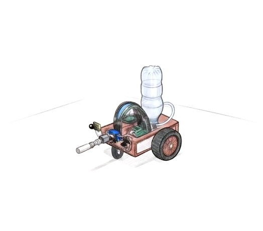
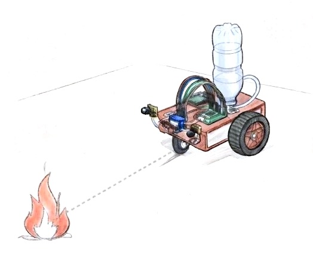
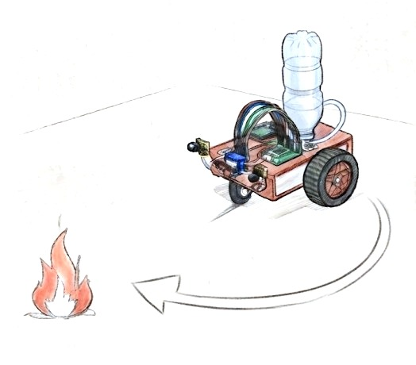
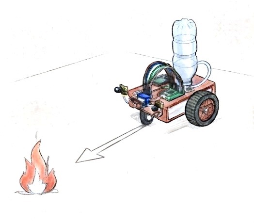
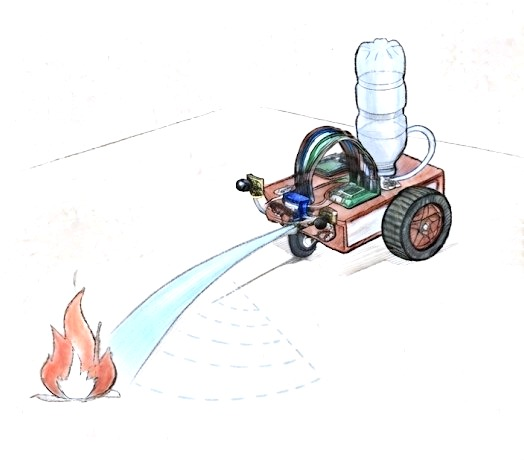
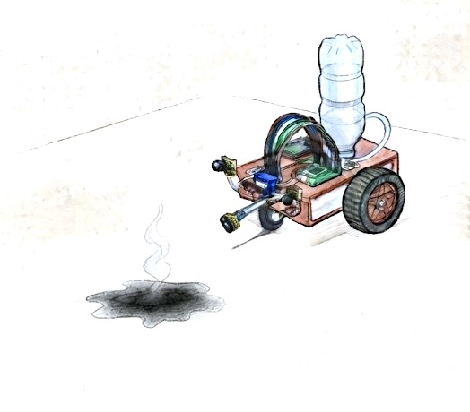

One fire, start to finish
A single run as the code executes it, from idle to reset. Illustrations, not photos.

STEP 1Idle
Motors braked, nozzle centered at 90°. The robot watches all three sensors.
Trigger all sensors read 1: no flame.

STEP 2Detect
A flame appears to one side and that side's sensor picks it up.
Trigger left or right sensor reads 0.

STEP 3Turn
One motor drives, the other holds, and the robot pivots until the flame is ahead.
Done when the front sensor sees the flame.

STEP 4Approach
Both motors drive forward for a fixed, hand-tuned time, then brake.
Drive time about 0.8 s: a 300 ms loop delay plus 500 ms at the start of the extinguish routine.

STEP 5Spray
The relay switches the pump on. After 0.5 s the servo sweeps the nozzle 50° → 130° → 50°.
Duration pump on for about 2.1 s, including a 1.6 s sweep.

STEP 6Reset
Pump off, nozzle back to 90°, and the robot returns to watching the sensors.
Repeats if a sensor still sees flame.